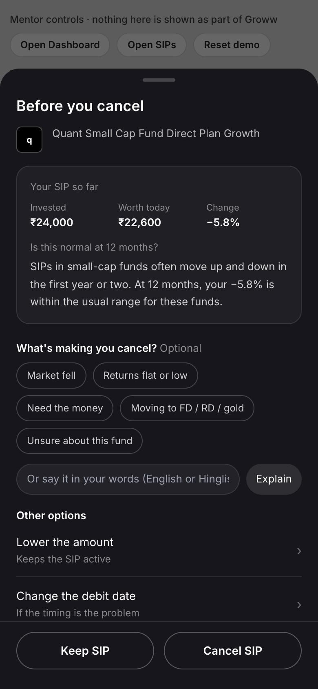
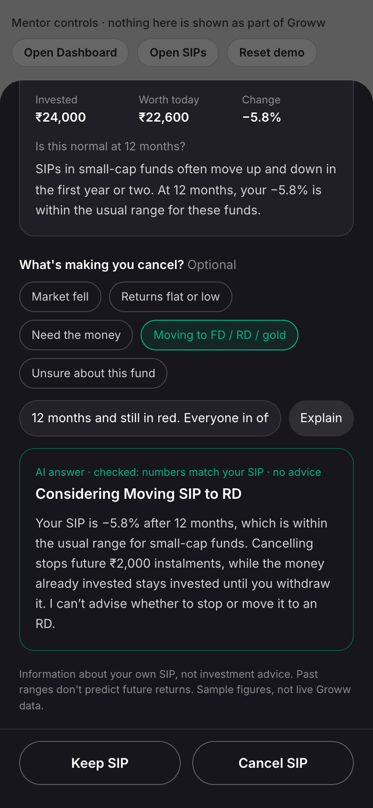
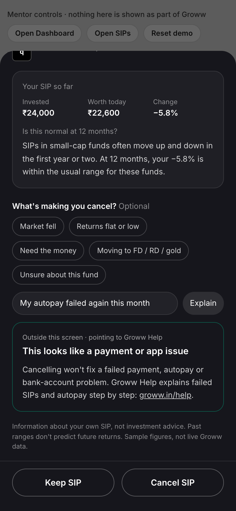

Helping investors make informed choices and stay the course through market fluctuations.
Goal: more first-time mutual fund investors with an active SIP 12 months after they start. No fund picks, no fear, and cancelling stays easy.
first-time investors among the 1,917 public posts the engine read
interviewees were at risk because they decided to stop. None because a debit failed.
real investor messages where the AI cancel sheet understood the worry (3 runs). Fixed rules alone: 8.
North star: % of first-time mutual fund investors with at least one successful instalment in the last 30 days, 12 months after their first SIP.
KYC (identity check), autopay set-up and the first debit all work
of first-timer stop posts
Fixable by operations, not productLow balance, old salary account, nobody told them
of first-timer stop posts
Fixable by operations, not product| Decides to stop or switch after red or flat months | 19% |
| A pause or cash squeeze becomes a cancel | 10% |
| Can't read the returns screen, drifts off | 9% |
Orange = fixable by operations (payments, bank and support processes), not by a new product screen. Blue = where I built.
What the definition tells us: a smaller amount still counts as active, and a skipped month only hurts if it lands in the 30-day window. So at the cancel button, reduce or skip is a save. A lapsed SIP also comes back with one successful debit inside 30 days.
posts: Play Store, App Store, Reddit, YouTube, TradingQ&A
about their own SIP, duplicates removed
stage, months in, SIP status, trigger, quote
visible cause per stop post, mapped to a branch
first-timers; uplift per area; Q&A cites post IDs
| Main cause in the post | Posts | Share | Reach | Gain |
|---|---|---|---|---|
| Failed payments | 19 | 27.9% | +2.9 | |
| First SIP never went live | 7 | 10.3% | 0.8 | 0.99 |
| A later debit failed | 12 | 17.6% | 0.9 | 1.90 |
| Stop decisions | 20 | 29.4% | +2.3 | |
| Stopped after red or flat months | 7 | 10.3% | 0.5 | 0.62 |
| Stopped to switch fund or app | 6 | 8.8% | 0.7 | 0.74 |
| Cash squeeze | 4 | 5.9% | 0.6 | 0.42 |
| Pause or skip didn't work as expected | 3 | 4.4% | 0.9 | 0.48 |
Gain (percentage points on the 12-month rate) = 40% of first SIPs gone by month 12 × share × reach × 30% can come back. E.g. 40 × 17.6% × 0.9 × 30% = 1.90. Reach is my estimate of how much of a cause a fix can touch. Without it: +3.4 and +3.5.
Too close to call. So I took both into interviews, with the rule written first: whichever 3 of 5 people describe wins.
| 1 | The fall is the trigger, not the reason. People who kept going mention falls as often as people who stopped. |
| 2 | Payment posts are about not being told. Across all 121 payment stop posts (all investors): 32 failed with no reason, 20 debited with no units, 13 never went live. |
| 3 | "Panic" was the wrong word. Of 9 stops in a fall I labelled, 4 were fear. |
judged the SIP only by red or green, against a return they hoped for in a year
knew only two options: keep going or stop
still invest, just not in SIPs: fixed deposit (FD), recurring deposit (RD), lump sum, gold
| Month | Where they are now | Who settled the doubt | |
|---|---|---|---|
| P1 | 12 | Running, nearly moved to RD | Office colleague: "just hold on" |
| P2 | 14 | Stopped, money in FD / RD | Finance YouTubers |
| P3 | 8 | Planning to stop | Nobody. "Everything seems very vast" |
| P4 | 11 | Stopped, lump sums instead | Cousin, after a tax-saving fund (ELSS) lock-in surprise |
| P5 | 15 | Halved, half to a gold scheme | A friend, and a jeweller's offer |
"Whenever I see my money in red, i feel like stopping the SIP and put the money in RD" · P1
"I stopped my sip and left my investment money as it is because i was not sure what to do" · P2
It isn't mainly panic, cash or payments. The app shows returns, never "is this normal for my fund at month 12, against my goal?". So they ask someone else, often whoever got them started, and do what that person says.
The Red-Number Doubter · 22–32, salaried, ₹1k–10k a month, started on someone's word, 8–15 months in. Target
The Quiet Mover · moving new money to FD / RD / gold (3 of 5). Same moment, same sheet.
The Payment Casualty · debit failed, never meant to stop. Excluded: fixable by operations
Tapping Cancel SIP is the one moment we know they're deciding, and today the app only asks "are you sure?". Reduce, skip and change date already exist, but 4 of 5 didn't know.
Users: decide on their own numbers, and stopping is still a fine choice. Groww: a reduced or skipped SIP still counts as active, and the money stays invested.
Problem statement: In their first year, first-time investors judge their SIP only by red or green against a one-year expectation. With no way to tell what's normal, they ask someone they trust, then stop, reduce or move the money out of SIPs.
Show how many in this fund continued
+ Cheap to build
− Only 1 of 5 cared. Fit 1 of 9 posts. Reads like an endorsement.
Push a note when markets drop
+ Reaches people early
− Adds worry at the worst time, to people who didn't ask.
Warn what stopping costs
+ Might cut cancels
− Fear. Not allowed, and the screen feels like a trap.
Their numbers, their worry, smaller moves
+ Hits the real gap: they can't tell what's normal
− The AI needs strict limits, so every reply is checked.
People rarely give one clean reason: "market fell, dad says recession, should I pause?" On 20 real posts, keyword rules picked the right answer 8 times; the AI 15–17. Rules read "the Nippon India Gold fund is negative" as "moving my money to gold". The AI's only job is to read the worry and explain the user's own SIP. It can't add numbers, name funds, or say stop or continue.

Tap to view full screen
Tap to view full screen
Tap to view full screenNumbers must match the user's SIP. No fund names, no advice or fear words, 4 sentences max. If a check fails, a standard answer shows instead.
| How I tested (3 runs) | Rules | AI |
|---|---|---|
| Understood the worry, 20 posts | 8 | 15–17 |
| Payment → Groww Help | 1/10 | 10/10 |
| Advice or fear shown | 0 | 0 |
Task: "You're thinking of cancelling your SIP. Use the app to decide." Same people, own phone, thinking aloud.
| What they saw | Chose | Outcome | |
|---|---|---|---|
| P1 | Returns were red; the sheet helped them read the market | Hold | Kept the SIP |
| P4 | Missed Skip on the first look | Cancel | Cancelled |
| P5 | A lower price buys more units for the same money | Reduce | Halved the SIP; rest went elsewhere |
What I changed: nothing yet. Next: put Skip higher, so P4 sees it before Cancel.
| Metric | Why I chose it |
|---|---|
| North star | 12-month active rate. It is Groww's goal. |
| Saved at cancel | Still active 30 days later — first sign the sheet worked. |
| Chose a smaller option | Reduce, skip or a new date. A smaller SIP still counts. |
| Still paying 90 days later | The save is real, not a cancel put off. |
| Risk | What I'd do | |
|---|---|---|
| 1 | Feels like a retention trap | Cancel sits on the first screen next to Keep SIP. Cancel time and complaints are guardrails with a rollback line. |
| 2 | An AI reply reads like advice | Check every reply, fall back to a standard answer, re-run the eval before any model or prompt change. |
| 3 | "Usual range" read as a promise | Build ranges from real category history published by the Association of Mutual Funds in India (AMFI), and keep "past ranges don't predict returns" on screen. |
| 4 | It comes too late | Next: ask for a goal and time frame at SIP start, then a month-6 "how am I doing" check-in. |
| 5 | Payments still end SIPs | Parallel operations fix: say why a debit failed, and prompt an autopay update after a bank change. |
5 interviews from my network, all at risk · public posts aren't Groww users · uplift rests on two assumptions (40% lapse, 30% recoverable) that cohort data would replace · golden set labelled by one person · eval run on MiniMax-M2.7, re-run on the live model before launch.